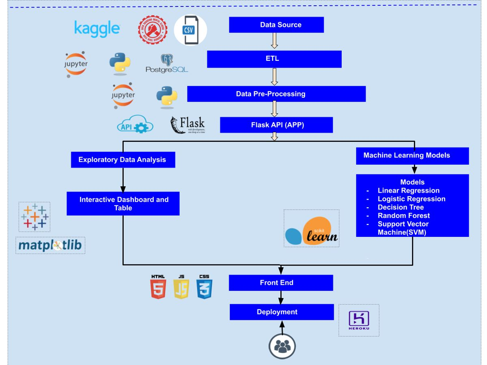
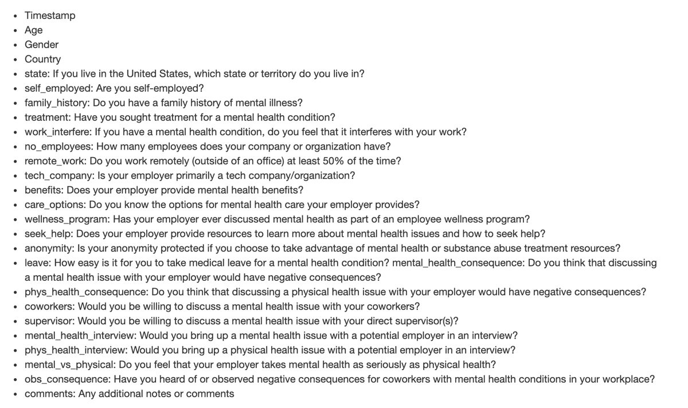

Excel datesFixed
Company sizes "1-5" and "6-25" had been turned into the dates "05-Jan" and "25-Jun" in 452 responses.
Two views of the same question: who seeks treatment in a survey of 1,258 tech workers, and how suicide rates in 185 countries changed from 2000 to 2021 and what goes with them — income, alcohol, education and employment — with an honest look at what machine learning can and can't predict.
Key findings
Each finding in plain words first, with the statistics behind it underneath (full analysis: tools/analyze.py).
Background
Suicide remains a significant global public-health concern: the World Health Organization estimates about 800,000 people die by suicide each year, with substantial variation across countries and over time, and many more experience suicidal ideation or attempts.
Research identifies two broad domains associated with suicide mortality at the population level: structural and socio-economic conditions — income, education, employment and social protection — and mental-health factors such as the prevalence of mental disorders and access to care (Li et al., 2011). This project examines both.
World map · 2017–2019 average
World Bank suicide mortality (deaths per 100,000) and related indicators, plus each country's change since 2000. Pick a measure; click a country for its 22-year trend.
Workplace survey
Share of OSMI Mental Health in Tech respondents (2014–2016) who have sought treatment for a mental-health condition, by their answer to another question. Pick a question.
2000–2021
Population-weighted average (bigger countries count more) of World Bank / WHO suicide-rate estimates for 185 countries.
185 countries · 2017–2019 average
World Bank suicide rates (deaths per 100,000) against social and economic indicators. Each point is a country.
| Indicator | Countries | Effect, all countries | Effect within region | Check: 2015–16 data | |
|---|---|---|---|---|---|
| Calculating… | |||||
| Change in… | Effect on suicide per 100k [95% CI] | p-value | Countries |
|---|
Prediction
Re-analysis on all 185 countries (2017–2019 averages) with repeated 5-fold cross-validation — replacing the original single split of 58 countries.
| Model | Cross-validated R² |
|---|
Data quality
Fixes are scripted in tools/clean_data.py and tools/build_static.py.
Company sizes "1-5" and "6-25" had been turned into the dates "05-Jan" and "25-Jun" in 452 responses.
Ages such as −1726, 5, 329 and 99,999,999,999 (8 respondents) are treated as missing; one duplicate response was removed.
46 World Bank rows like "World", "High income" and "Euro area" sat alongside the 217 countries and would double-count in any country statistic.
The old pages cited "200+ countries, 14 years", WHO data and "strong protective effects of healthcare access" — none of which the data contains. All figures are now calculated from the data.
How it was done
OSMI Mental Health in Tech survey (Kaggle) and World Bank World Development Indicators 2000–2021 (tools/fetch_external.py).
Reshaped the World Bank export with Pandas, fixed data errors and separated countries from aggregates.
Tableau dashboards and correlation analysis — see the dashboards.
Odds ratios and logistic regression (survey); region-adjusted and within-country fixed-effects regressions, cross-validated models (countries) — tools/analyze.py.


Online
Answers come from this project's data and a data-science knowledge base. Not medical advice.